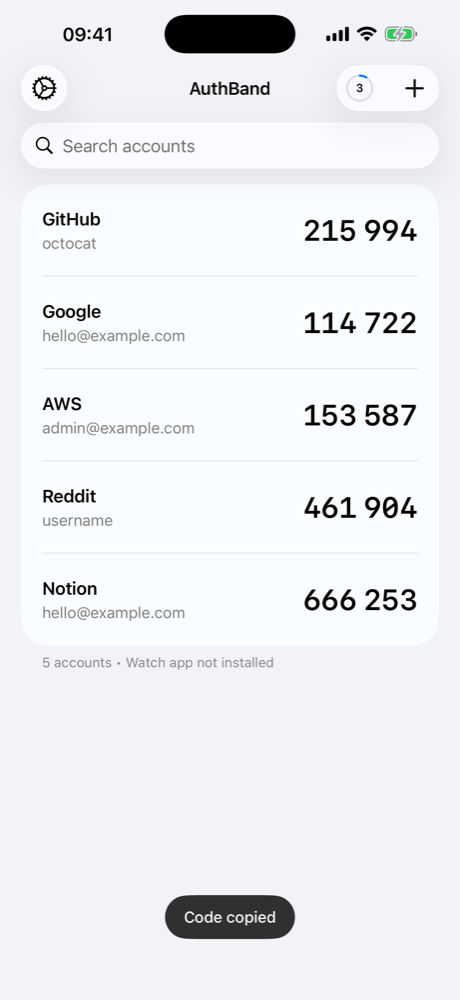
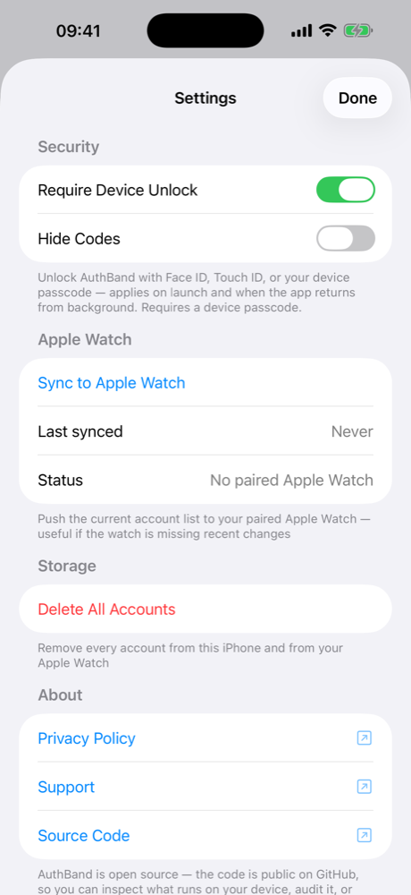
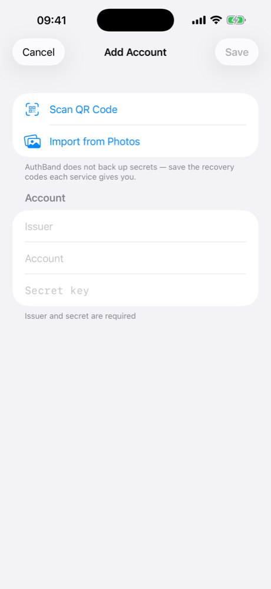
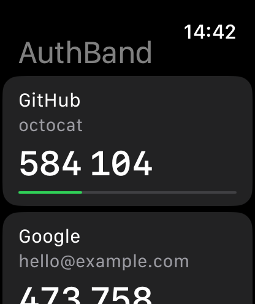
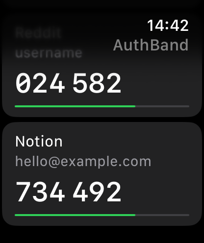
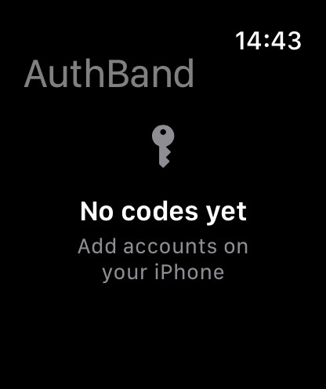

AuthBand
A TOTP authenticator built for Apple Watch. Add accounts on iPhone, glance at codes on your wrist.
No network, no cloud, no third-party SDKs. Secrets live in the iOS Keychain, bound to your device passcode. Sync between iPhone and Apple Watch goes through Apple's peer-to-peer channel – there is no server in the middle.



On the wrist
The full account list with live countdown timers lives natively on your Apple Watch. The phone hands the account list to the paired Watch directly through WatchConnectivity – no server in the middle, no third-party relay.



Privacy Policy
Effective date: 16 May 2026
Applies to: AuthBand for iOS and watchOS
AuthBand collects nothing
- No personal information.
- No account.
- No analytics.
- No crash reports sent anywhere.
- No advertising identifiers.
- No usage tracking.
- No telemetry of any kind.
Where your data lives
Everything you put into AuthBand – the issuer name, account label, and TOTP secret of each entry – is stored locally on your iPhone in the iOS Keychain. The Keychain entry uses kSecAttrAccessibleWhenPasscodeSetThisDeviceOnly, which means:
- The data is bound to your specific device.
- The data is bound to your device passcode. If you remove your device passcode, iOS deletes the entry automatically.
- The data is not synchronized to iCloud Keychain.
- The data is not included in unencrypted iTunes/Finder backups.
When you sync to your paired Apple Watch, the watch keeps an independent local copy in its own Keychain, with the same protection.
What AuthBand sends over the network
Nothing. AuthBand does not make any network requests. There is no server, no API, no cloud service. The app works entirely offline.
The only data leaving the iPhone is the WatchConnectivity payload that the operating system delivers to your own paired Apple Watch over the encrypted, peer-to-peer channel that Apple provides for paired devices. AuthBand never sends data to any third party or to the developer.
Permissions the app asks for
- Camera – to scan QR codes when adding a new account. The camera is only active while the QR scanner is on screen. No photos or video are saved.
- Face ID / Touch ID / device passcode (via
LocalAuthentication) – to unlock the app if you have the "Require Device Unlock" setting enabled. - Photo library (via the system
PhotosPicker) – to import QR codes from screenshots you select. AuthBand uses Apple's privacy-preserving picker, which does not grant the app access to your photo library. The app only sees the specific images you tap.
Third parties
AuthBand has no third-party software dependencies. No SDKs from analytics vendors, ad networks, attribution providers, or anyone else. The only frameworks are Apple's own (SwiftUI, CryptoKit, WatchConnectivity, LocalAuthentication, AVFoundation, PhotosUI, CoreImage, etc.).
Crash reports
AuthBand does not ship a crash reporting SDK. If a crash happens on your device, the standard Apple crash report machinery may forward an anonymous, system-collected report to Apple if you have "Share with App Developers" enabled in iOS Settings. The developer may see those reports in App Store Connect. AuthBand itself does not collect, transmit, or store anything.
Account deletion
There is no account to delete. To remove all stored secrets:
- Open Settings → Storage → Delete All Accounts inside the app, or
- Delete the app from your iPhone. iOS automatically removes the Keychain entries (because they use
WhenPasscodeSetThisDeviceOnlyaccessibility).
Source code
AuthBand is open source. The full source code is published at GitHub. You can read it, build it, and verify these claims against the implementation.
Changes to this policy
If this policy changes in a meaningful way, the change will be reflected here and the Effective date above will be updated. Older versions remain in the git history of the source repository.